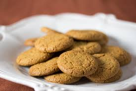

Gingersnap Cookies
Home

Description:
These Ginger Snap Cookies are soft and chewy with a crisp edge. An easy Christmas cookie recipe that are perfect for any holiday cookie spread, but great any time of year!
Ingredients
- 2 sticks unsalted butter room temperature
1 ½ cups dark brown sugar (Substitute: For 1 cup brown sugar: 1 cup granulated sugar,1 tablespoon honey or maple syrup, adjustment: Reduce other liquid in the recipe by 1 tablespoon.)
- ½ cup granulated sugar
- 1 large egg
- 1 large egg yolk
- 1 ½ teaspoon vanilla extract
- 2 ¼ cups all purpose flour
- 1 teaspoon baking soda
- ½ teaspoon kosher salt
- 1 teaspoon ground cinnamon
- 2 ½ tsp ground ginger
- For rolling the dough: ¼ cup granulated sugar
Steps:
- Preheat your oven to 375℉.
- In a large bowl, mix the dark brown and granulated sugar with the room temperature butter until well combined.
- Add the eggs and vanilla to the butter mixture and mix until well combined.
- Add the flour, cinnamon, ginger, salt, and baking soda to the wet ingredients. Mix until the flour is just combined.
- Form 4 tablespoon sized cookie dough balls and roll them in granulated sugar. Place them on a parchment paper lined baking sheet a few inches away from each other.
- Bake the cookies at 375°F for 15 minutes until the edges are nice and golden but the centers are still on the lighter side. Let them cool on the baking tray for 5 minutes then transfer to a wire rack to cool completely. (Important note: if you make the dough balls smaller, the bake time will be less. Start checking around 10 minutes).